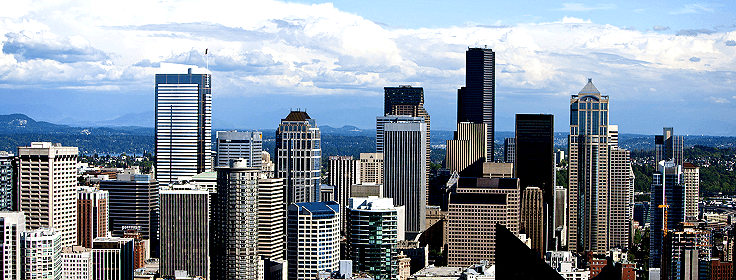
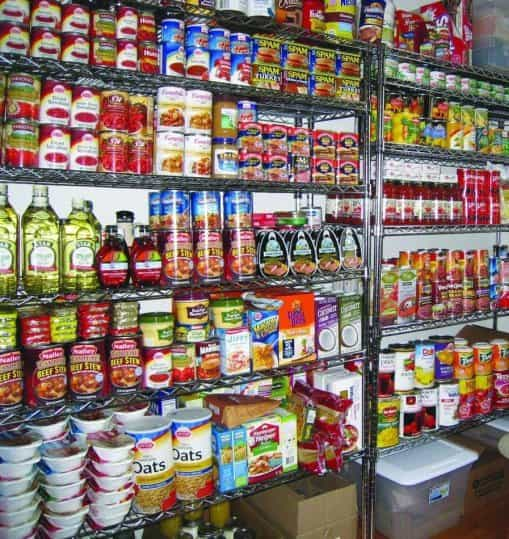
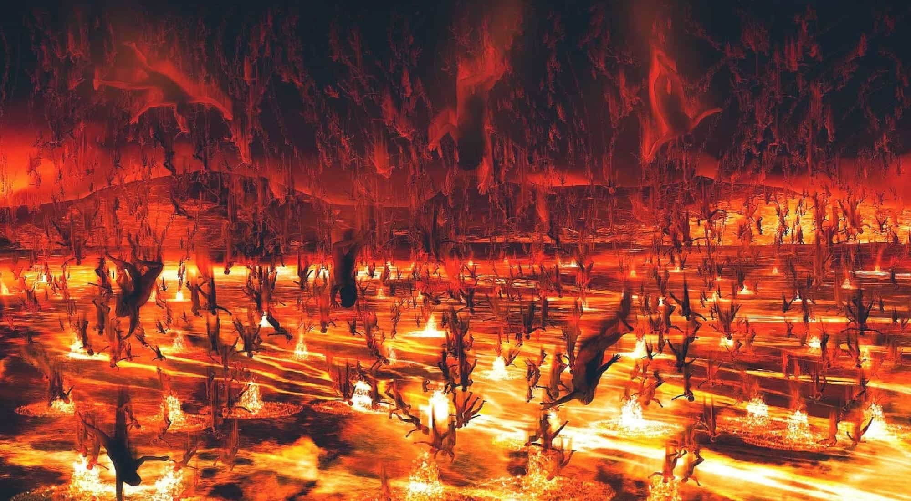

When doing survival “research” today you more or less find stuff that fall into two main approaches:
- Bugging out: basically leaving where you live, either to move to forests/Mother Nature (buschcraft) or a second location that you would have prepared in advance
- Bugging in: basically staying where you are and preparing right now at your current location.
If like me, based upon the analysis of your own situation you intuitively root for the second option by default, (i.e. bugging in), then this article is definitely for you.
1. Bugging in versus bugging out

First of all, whatever the reason why a survival situation arises (earthquake, serious riots, civil war), staying where you live eliminates a lot of uncertainty. Indeed, you know what your surroundings are (potential danger areas, but resources as well) and what you have at your disposal. You can right now prepare a full set of supplies that you know that you will have readily available if needed on D-Day. Your storage capacity will be no match with a bugging out bag you would rely on to reach a potential location you possibly would never reach (and guess what, chances are you will end exactly as a refugee).
If you think about leaving to the forest, just try to figure out what could happen. You will have basically on one side fierce competition with other humans vs. scare resources
Do you think your potential food (animals) would just wait and do nothing in case of massive human arrival? They will adapt, hide and leave.
Will it be easy to defend yourself in the woods (basically open locations)? Skill-wise, believe me, spending a week-end of bushcraft is one thing. Living in full autonomy in a forest is accessible to only a few.
Do you have a family? Points above get worse! Not the mention the psychological benefit of staying in a familiar environment for them.
2. What you need

What you really need falls into three categories…
Water and Food
Just one word: STORAGE. For food, store what you like. In a survival situation, you have to avoid quick-burning sugar and focus on cereals (corn) and legumes (beans). Seeds are a great alternative as well. You would need a small amount of water to have germinated ones and you would get all the nutrients you need, not to mention the storage requirement which is quite low.
For water, store as much as you can (even more important than food). Try if you can non-plastic recipients as after a while plastic would blend with water and give to it an awful taste (though better than no water at all). Due to the needs we have, you would need to get creative to store a decent quantity.
Hygiene and Health
Just double or triple what you have today when it comes to soap, toothpaste (some sorts of soap could be used as toothpaste, like “Savon de Marseille”), plastic bags, duct tape, and hydro-alcoholic solution. For toilets, dry ones are the solutions, basically large plastic/trash bags and sawdust will do the job.
Prepare a list of common drugs for diarrhea, pain, fever, gastric diseases and so on. For antibiotics, be careful: you can try large-spectrum ones but a misusage of can lead to a situation worse than before the treatment. Consider alternatives like colloidal silver or magnesium chloride. Finally, go and get some first aid training.
Weapons
Learn how to properly use your weapon of choice, and I mean not only firing but getting sight alignment theory and practice, quick target acquisition, shooting a moving target, plus basic operations (reloading, incident management, cleaning). Get ammunition in advance. Consider the use of a suppressor as well (inside use, you ears will thank you for that). On top of this, attracting people through the noise is the least thing you would want to do.
3. Make your urban survival plan

Take some time right now to establish a plan that would go beyond just getting some supplies which are, obviously, not going to last forever.
First, establish a physical security plan for the location you live in. Do you live in a flat at an elevated floor? That’s easier to defend if lifts are not working but riskier in terms of exposure to criminal fire. Try to identify potential allies in your immediate surroundings/neighborhoods—you would need someone to watch your back or establish some surveillance routines
Second, establish a refuel plan for both food/water.
For water, one of the only viable options would be rain collection (if in dry climate, consider condensation even if return rate would be low). Just build some kind of water collection system on your balcony or roof. Boil the water after gathering. Some people would say that this pure water could be bad health-wise as it contains no minerals, so using salt or putting some rocks at the bottom of your recipient could help.
For food, just prepare basically a plan around traps for birds/rats, and so on. Learn some gardening skills (and scout potential location to grow food).
Drugs are not found “as is” so you will need things of value to exchange. Think about some easily storable items that could be exchanged at the right time (one of my personal favorite would be lighters). At the beginning of a survival situation, identify where you could find the different kinds of supplies (pharmacies for drugs, restaurants for knives or cooking materials, and so on).
In case of last resort, if your flat is burning or you are forced by military to leave your house, try to move to another part of the city rather than going to the woods or to an hypothetical location that you would think of in advance with no guarantee of reaching it.
Conclusion
Urban survival comes as a combo of supplies/materials, knowledge, and most importantly, having a plan and sticking to it. Use this article as a guide and adapt wherever you deem it necessary depending on your personal situation or beliefs. Use modeled scenarios to adapt your plan based on your observations and never stop to test and learn.
Read More: Why You Should Always Be Prepared For A Survival Situation